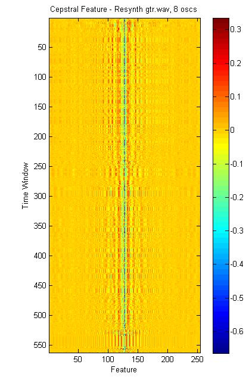

Data Driven Gestural Control of a Synthesis Process by an Audio Stream
Victor Shepardson | Dartmouth College | CS 174 Fall 14
Problem
Given a synthesis process $S$ which converts a time series of synth parameters to a time series of audio samples, a basis function $b$ which maps audio to a perceptual space, and an input audio series $a$, we attempt to find the parameter series $y$ which minimizes $\lvert b(a) - b(S(y)) \rvert$. The result is a kind of gestural control of the synthesis process by the audio stream.Aesthetics
The intended use of this system is artistic. The idea is to let a performer or composer map the essential gestures of a performance into a different timbral space. Exactly what constitutes a gesture (pitch? spectral envelope?) depends on $b$ and what timbres can be produced depend on $S$. Resynthesis of the original signal by $S$ also introduces direct manipulation of the derived synth parameters as an expressive control. For example, oscillators in the resynthesis process might be spread across the stereo field or tuned to a scale.There are two modes of operation to consider: real time, and offline. In the real time mode, a performer should be able to use the system interactively. Efficiency and low latency are crucial; the application should be able to operate with only a few milliseconds delay and as part of a wider audio processing software ecosystem. In the offline mode, neither is required; input and output can be to static audio files on a hard drive. The offline mode is what will mostly be considered here.
Approach
A desirable feature of this system is that it be able to operate in real time with minimal latency, i.e. in a live improvisation setting. Therefore we divide the audio stream into short segments and map each segment to a parameter vector. We take a data driven approach to the mapping. Each short windowed segment of audio $a_i$ is converted to a feature vector $b_i = b(a_i)$. Given a training set of feature vectors $B = {b_1, \ldots b_m}$ matched with their corresponding points in the output space $Y = {y_1, \ldots y_m}$, we choose the nearest neighbor in feature space for each time window.Basis Function
A good basis function should transform audio to some perceptual space. That is, the euclidean distance between examples in feature space should be small iff the corresponding signals are perceived as similar by a human. [Humans decompose audio signals into frequency components, and are deaf to the phase of those components][5]. Therefore, we consider spectral representations of the input signal. We use a [Hann window][4] to reduce artifacts from spectral processing, and an overlap factor of $N_{overlap}$. An easy starting place is a power spectrum of the windowed signal given by the magnitude of the fast fourier transform.The power spectrum given by the FFT has many problems. One is that it destroys fine pitch information which is encoded in the phase spectrum. [Laroche][6] discusses the meaning of the power spectrum and describes the technique of extracting fine frequency information from the phase spectrum. Our attempts to take the phase spectrum into account when generating features were no fruitful, but it remains an area for further inquiry.
Another issue with the FFT is lack of perceptual weighting. Bins of the FFT are linearly spaced in frequency, but perceived pitch distances are not. We improve upon the FFT by resampling to the [Mel scale][7]. In a sense this is throwing away information; but the assumption is that this information is perceptually irrelevant. Meanwhile, perceptually less important frequencies no longer have an outsize impact on distances in feature space. Further, we apply an approximate weighting by perceived loudness to deemphasize low frequencies which are overemphasized by the Mel scale. This takes the form of a simple parabola, in decibels, over the Mel spectrum.
[Pachet and Aucouturier][3] describe a common basis used for finding timbral similarity between signals, the Mel-frequency cepstrum coefficients. The MFCCs encode a smoothed spectral envelope, which is good for identifying timbre but destroys pitch information. The MFCCs or power cepstrum are frequently used in speech processing and timbre similarity applications. However, we found that discarding the phase component of the cepstrum caused problems. The cepstrum encodes periodicity in the spectrum, with low quefrencies corresponding to filters. So filters with the same shape but different center frequencies (which correspond to very different timbres) are different only by a phase shift. That is, they look the same to the power cepstrum.
We conjecture that this is an advantage in e.g. speech recognition, where it is a pattern of formants that encodes meaning and not their absolute position. But here we get better results by including the real and imaginary components of the cepstrum together.
Synthesis Process
For a synthesis process, we use frequency modulation as described by [Chowning][1]. The process consists of $N_{oscs}$ FM oscillator pairs, each parameterized by a carrier frequency, ratio of modulating frequency to carrier frequency, index of modulation, and weight $c, r, i, w$. The sample value of the process at time $t$ is then: $$S(t) = \sum\limits_{i=1}^{N_{oscs}} w \sin( c t + \frac{i}{r}\sin( c r t ))$$ We use a bank of oscillators, with the carrier frequencies variable but each restricted to a unique band. The number of FM pairs per octave is a tunable parameter.Initally windowing was used on the synthesis process, with each overlapping time window corresponding to a different oscillator pair. This made the time windows less obvious in the output signal, but at the expense of the purity of the synthesis process. The current version attempts to smooth parameters to avoid egregious clicks at every window, but they are still often apparent.
Envelope Following
The overall amplitude of a segment of audio presents an undesirable extra degree of freedom. To eliminate it, we normalize all power spectra during feature generation, and store the constant of normalization. This envelope value can then be used to constrain the weights of each oscillator pair when generating parameters, and reapplied at the end of the synthesis process.Data Generation
We generate data for our model by randomly sampling the output (synth parameter) space to produce labels $Y$. Then parameter vectors are fed through the synthesis process and basis function to produce the labeled set of features $X'$ for our supervised nonparametric model. We take into account an example of features $X$, generated from audio. In the real time mode, this should be a representative set of pitches and timbres we expect to want to resynthesize. In the offline mode this can simply the audio we want to resynthesize, and there is no notion of overfitting.First, an intial set of parameters are sampled according to some implicit ad hoc distributions over the space of synth parameters: $y_i \sim P$. Then the corresponding point in feature space is given by $b_i = b(S(y_i))$. We subsequently take additional samples in an iterative process inspired by kernel estimators as described in [Scott and Sain 2005][8].
Iteratively: all points in $X'$ which are not a $K_{samp}$-nearest neighbor to some element of the example set $X$ are culled. Then, new samples are appended to $X'$ and $Y$ by randomly sampling a normal distribution around each extant point of $X'$. The covariance $\Sigma$ is taken to be the current covariance of $X'$. The number of new points sampled per point per interation is given by a hyperparameter $Samps_{it}$. The initial number of samples and total number of iterations are given by $Samps_{init}$ and $N_{its}$ respectively.
$K_{samp}$ need only be set to 1 in the offline mode. We conjecture that it might help prevent overfitting in the real time mode.
We experimented with using PCA to reduce the dimensionality of $Y$ for sampling, but were unable to reliably improve speed without more substantially reducing accuracy. In the results below, the number of components is set equal to the number of oscillator pairs, which is 16; this corresponds to a fourfold reduction in dimensionality.
In the below figure, we demonstrate the efficacy of this adaptive sampling scheme. The mean minimum feature distance from elements of the example set to elements of the generated set is shown decreasing, with a control group which continues to sample from the prior distribution (green) shown for comparison.
Hyperparameters
The hyperparameters present can be summarized as follows:- $N_{oscs}$ - number of FM oscillator pairs
- $N_{8ves}$ - the number of octaves to spread them over
- $L_{window}$ - length of analysis window in samples
- $N_{overlap}$ - number of overlapping analysis windows
- $K_{samps}$ - number of nearest neighbors to keep while sampling
- $Samps_{it}$ - number of new samples per point to take each iteration
- $Samps_{init}$ - number of initial samples taken from an ad hoc prior distribution of synth parameters
- $N_{its}$ - number of sample-cull iterations
Results
The system is fairly effective at matching rhythm and timbral envelope. Structure in the input signal is easily discerned, constructed from the sound of exploding computers. The following examples illustrate the effect of varying the synthesis process with different numbers of oscillator pairs. All use 2048 point FFTs with overlap of 2, and train once with 1000 initial points and 100 iterations of 1 new sample/point/iteration, with gtr.wav as the example set. Implementation Details
All code is original work or part of MATLAB. The statistics toolbox was used, and possibly the DSP toolbox somewhere in there.Future Work
Future work might include extension to different synthesis processes, perhaps following [Schottstaedt][2].Further efforts to interpolate parameter vectors for better sampling and better-than-nearest-neighbor modeling might emply MDS to find a euclidean space for parameter vectors from their pairwise feature distances.
The [SoundSpotter][9] code could be adapted to implement the system in real time for Max/MSP, Pd and VST hosts.
References
[1]: http://www.jstor.org/stable/23320142 "John M. Chowning. 1977. The Synthesis of Complex Audio Spectra by Means of Frequency Modulation. Computer Music Journal, Vol. 1, No. 2 (April, 1977), pp. 46-54"[2]: http://www.jstor.org/stable/40731300 "Bill Schottstaedt. The Simulation of Natural Instrument Tones using Frequency Modulation with a Complex Modulating Wave. Computer Music Journal, Vol. 1, No. 4 (November 1977), pp. 46-50"
[3]: http://coltrane.music.mcgill.ca/Andrew/timbre/timbre-similarity_aucoutrier.pdf "Francois Pachet and Jean-Julien Aucouturier. Improving timbre similarity: How high is the sky? Journal of negative results in speech and audio sciences 1.1 (2004): 1-13"
[4]: http://en.wikipedia.org/wiki/Window_function "Wikipedia: Window function"
[5]: http://en.wikipedia.org/wiki/Psychoacoustics "Wikipedia: Psychoacoustics"
[6]: http://ieeexplore.ieee.org/xpls/abs_all.jsp?arnumber=759041 "J. Laroche. Improved phase vocoder time-scale modification of audio. IEEE Transactions on Speech and Audio Processing. Vol. 7, Issue 3 (August 2002), pp 323-332"
[7]: http://en.wikipedia.org/wiki/Mel_scale "Wikipedia: Mel scale"
[8]: http://bama.ua.edu/~mdporter2/papers/Multi-dimensional%20density%20estimation_Scott_Sain.pdf "Scott, David W., and Stephan R. Sain. Multi-dimensional density estimation. Handbook of statistics 24.2004 (2005): 229-261."
[9]: http://sourceforge.net/projects/mp7c/ "SourceForge: SoundSpotter"